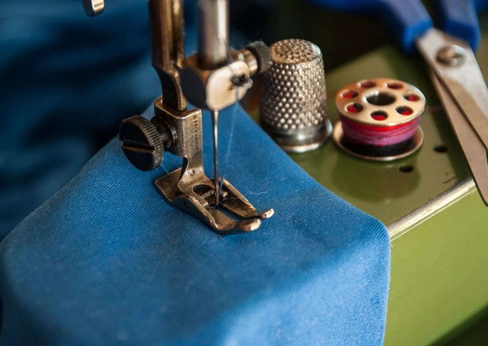
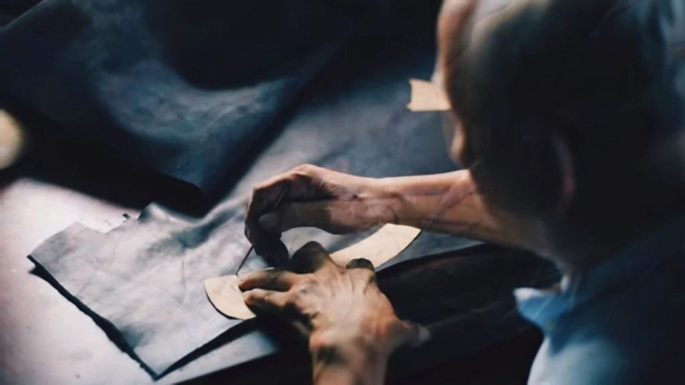

Pazartesi–Cumartesi açık, Pazar kapalı
Beşiktaş'ta tadilat, dikiş ve kişiye özel dikim
Paçası uzun gelen pantolon, kolu boy atan ceket, fermuarı küsen mont… Terzi Rahmi-Erkan 1982, Hasfırın Caddesi'ndeki Sinanpaşa İş Merkezi'nde. Parçanızı getirin, ne yapılabileceğine birlikte bakalım.
4,9 Google puanı · 1.323 değerlendirmeSipariş defterinden birkaç satır
Atölyeye en çok bu işler için gelinir. Her satırın ayrıntısı ve daha fazlası hizmet defterinde.
- Paça ve kol boyupantolon, ceket, gömlek
- Daraltma, genişletmebel, beden, kalıp düzeltme
- Fermuar ve düğmedeğişim, onarım
- Elbise tadilatıabiye ve gelinlik ayarı önce sorun
- Kişiye özel dikimölçünüze göre
- Perde dikimiölçüye göre önce sorun

Bir tadilat nasıl ilerler?
Üç durak var. İlkinde siz gelirsiniz, sonuncusunda parçanız üstünüze oturmuş olarak çıkar.
-
Parçayı getirin
Mümkünse o parçayla giyeceğiniz ayakkabı ya da gömlekle gelin. Paça ve kol boyu, ancak birlikte giyilecek şeyle doğru ölçülür.
-
Üzerinizde işaretlensin
Parçayı giyersiniz; alınacak yer toplu iğne ve terzi sabunuyla işaretlenir. Daraltma ve dikim işlerinde doğru sonuç için prova yapıyoruz.
-
Teslim gününü öğrenin
Süre, işin türüne ve o günlerdeki yoğunluğa göre değişir. Teslim gününü parçayı gördükten sonra söyleriz.
Hazır kalıba sığmayanlar için: ölçünüze göre dikim
Omuzu oturan ceketin kolu uzun gelir, beli olan pantolonun baseni dar. Kişiye özel dikimde kalıp bedene göre değil, sizin ölçünüze göre çıkarılır; kumaşı, yakayı, cebi siz seçersiniz.
Süreç bir görüşme ve ölçüyle başlar, provayla şekillenir. Adım adım ne olduğunu, ölçünün nereden alındığını ve provaya gelirken yanınızda ne olması gerektiğini ayrı bir sayfada anlattık.

Etiketin dili: bakım simgelerini çözün
Giysinizin iç dikişindeki küçük etikette ne yazdığını bilmek, tadilattan önce de sonra da işe yarar. Bir simgeye dokunun.
En fazla 30 °C'de makinede yıkayın. Teknenin içindeki sayı, suyun çıkabileceği en yüksek sıcaklığı gösterir; daha soğuk yıkamak her zaman serbesttir.
En fazla 40 °C'de makinede yıkayın. Pamuklu gömleklerde ve günlük pantolonlarda sık rastlanan simgedir.
Teknenin altında tek çizgi varsa hassas programda, az sıkmayla yıkayın. Çizgi çiftse çok hassas program gerekir; yünlü ve ipeklilerde görülür.
Yalnız elde yıkayın. Su ılık olsun (en fazla 40 °C), kumaşı ovmayın, burarak sıkmayın; havluya sarıp suyunu alın.
Suyla yıkanmaz. Çoğunlukla kuru temizleme simgesiyle birlikte bulunur; astarlı ceket, palto ve takım elbiselerde yaygındır.
Boş üçgen, gerektiğinde ağartıcı kullanılabileceğini söyler. İçinde iki eğik çizgi varsa yalnız oksijenli (klorsuz) ağartıcı kullanılır.
Çarpılı üçgen: hiçbir ağartıcı kullanmayın. Renk solar, lif yıpranır.
Kare içinde daire kurutma makinesidir. Ortada tek nokta düşük ısıyı, iki nokta normal ısıyı gösterir.
Kurutma makinesine girmez; asarak ya da sererek kurutun. Yünlü ve viskon parçalar makinede çekebilir, boyu kısalır.
Tek nokta: düşük ısı (en fazla 110 °C). Sentetik ve karışımlı kumaşlar içindir; buharı dikkatli kullanın.
İki nokta: orta ısı (en fazla 150 °C). Yün ve polyester karışımları içindir. Yünlüyü parlatmamak için araya ince bir bez koyun.
Üç nokta: yüksek ısı (en fazla 200 °C). Pamuk ve keten içindir; hafif nemliyken ütülemek kırışığı daha kolay açar.
Ütülenmez; buhar da uygulanmaz. Kırışıklık için parçayı asıp kendi ağırlığıyla açılmasını bekleyin.
Daire, profesyonel kuru temizleme demektir. İçindeki harf (en sık P ve F) temizlikçiye hangi çözücünün kullanılacağını söyler; sizin bir şey yapmanız gerekmez.
Çarpılı daire: kuru temizlemeye verilmez. Etiketteki yıkama simgesine uyun.
Simge seçin
Soldaki simgelerden birine dokunduğunuzda anlamı burada görünür.
Terzi notu: Tadilata getireceğiniz parça temiz olursa işaretlemek ve dikmek kolaylaşır. Etiketi "yıkanmaz" diyen parçayı önce kuru temizlemeye verin.
Atölye ne zaman açık, nerede?
Pazartesi–Cumartesi açık, Pazar kapalı
| Pazartesi | 09:00–20:00 |
|---|---|
| Salı | 09:00–20:00 |
| Çarşamba | 09:00–20:00 |
| Perşembe | 09:00–20:00 |
| Cuma | 09:00–20:00 |
| Cumartesi | 09:00–20:03 |
| Pazar | Kapalı |
Kapıdan girmeden sorulanlar
Tadilat ne kadar sürer?
İşin türüne ve o günlerdeki yoğunluğa göre değişir. Basit işler çoğunlukla kısa sürer; teslim gününü parçayı gördükten sonra söyleriz.
Prova gerekli mi?
Daraltma ve dikim işlerinde doğru sonuç için prova yapıyoruz. Paça ve kol boyu gibi işlerde parçayı bir kez giyip işaretletmeniz çoğu zaman yeterlidir.
Randevu almadan gelebilir miyim?
Çalışma saatleri içinde uğrayabilirsiniz. Prova ve ölçü gibi zaman isteyen işlerde önceden yazarsanız geleceğiniz gün ve saat netleşmiş olur; bunun için randevu oluşturucuyu kullanabilirsiniz.
Ücreti nasıl öğrenirim?
Ücret; parçaya, kumaşa ve yapılacak işe göre değişir. Parçayı atölyede gösterebilir ya da telefonla ve WhatsApp'tan sorabilirsiniz.
Her kumaşta tadilat yapılır mı?
Deri, kürk, payetli ve çok ince kumaşlar ayrı özen ve ekipman ister. Böyle bir parçanız varsa getirmeden önce sorun, bilgi verelim.
Dolapta bekleyen o parçayı çıkarın
Ne yaptırmak istediğinizi birkaç dokunuşla seçin; mesajınız hazır olsun.